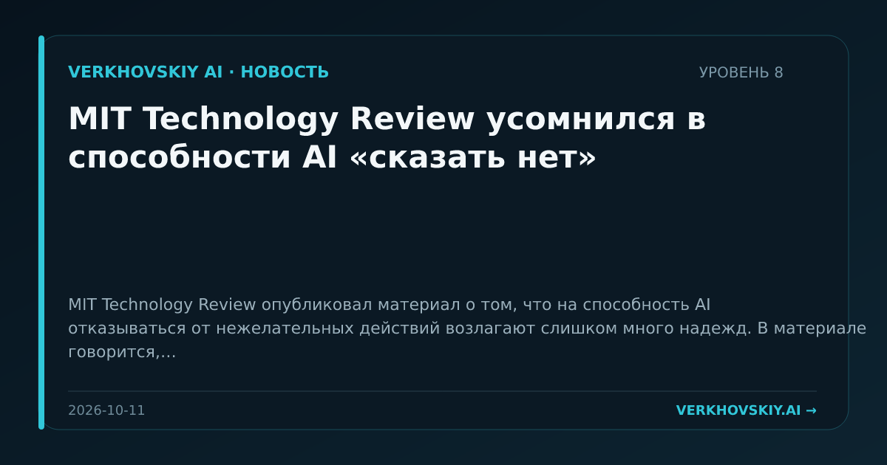

MIT Technology Review усомнился в способности AI «сказать нет»
MIT Technology Review опубликовал материал о том, что на способность AI отказываться от нежелательных действий возлагают слишком много надежд. В материале говорится, что идея машинного отказа обсуждается с ранних этапов размышлений об интеллекте машин. Почему это важно: Надёжность AI нельзя сводить к декларативному отказу модели. Для агентных систем это подталкивает к внешним контурам контроля, а не только к обучению безопасным ответам.